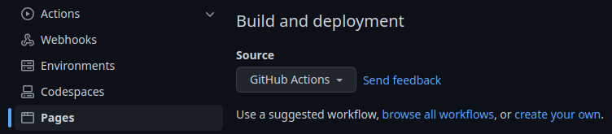

Sitios webs pregenerados
Ya hemos visto cómo generar un sitio web estático usando Jekyll y Liquid y cómo publicarlo automáticamente en GitHub Pages. Pero en ocasiones, puede ser necesario generarlo nosotros mismos, por ejemplo, mediante un flujo de trabajo de GitHub Actions personalizado. Para ciertos proyectos, es la única opción.
Al finalizar, sabrá:
-
Qué es un sitio web pregenerado.
-
Cómo configurar GitHub Pages para que no genere el sitio web automáticamente.
-
Qué acciones utilizar para publicar un sitio web pregenerado en GitHub Pages.
-
Qué acción utilizar para generar un sitio web con Jekyll.
Introducción
A los sitios que se publican explícitamente mediante un flujo de trabajo específico, los conoceremos como sitios webs pregenerados (pre-generated websites) porque no los tiene que generar GitHub Pages, sólo los tiene que publicar.
Vamos a mostrar un ejemplo ilustrativo de un flujo con el que publicar un sitio web pregenerado en GitHub Pages:
name: Publicación de sitio web estático en GitHub Pages
on: workflow_dispatch
permissions:
contents: read
pages: write
id-token: write
jobs:
deploy:
runs-on: ubuntu-latest
steps:
- name: Clona repositorio
uses: actions/checkout@v3
- name: Genera sitio web estático
shell: bash
run: |
# script para generar el sitio web estático
- name: Genera y guarda el artefacto de GitHub Pages
uses: actions/upload-pages-artifact@v1
with:
path: '.'
- name: Publica el sitio web en GitHub Pages
uses: actions/deploy-pages@v1
Configuración del repositorio para su publicación en GitHub Pages
Una vez tenemos claro que deseamos publicar un sitio web pregenerado en GitHub Pages, debemos configurar el repositorio Git. Esto se hace como sigue:
-
Ir a la configuración de GitHub Pages del repositorio, Settings > General > Code and automation > Pages.
-
Seleccionar GitHub Actions en Build and deployment > Source.
He aquí un ejemplo ilustrativo de configuración:

Acción actions/upload-pages-artifact
GitHub Actions proporciona la acción actions/upload-pages-artifact para generar el artefacto del sitio web a publicar en GitHub Pages. La idea es generar el sitio con la herramienta que deseemos y, entonces, subir su contenido con esta acción. Concretamente, la acción genera el artefacto y lo guarda en el almacén de artefactos de GitHub Actions para su posterior uso.
Recuerde que un artefacto (artifact) no es más que un archivo que puede guardarse durante un periodo de tiempo en el almacén de artefactos de GitHub Actions para su uso posterior en el mismo flujo de trabajo. Cuando generemos el sitio web a publicar en GitHub Pages, este artefacto se conoce formalmente como artefacto de GitHub Pages (GitHub Pages artifact), se debe nombrar como github-pages y debe ser un archivo gzip conteniendo un único archivo tar. Este archivo tar debe contener como máximo 10GB y no puede contener enlaces.
Concretamente, la acción hace este trabajo por nosotros. En primer lugar, genera el artefacto, generando el tar, y a continuación usa actions/upload-artifact para añadirlo al almacén. Dispone de las siguientes entradas:
| Entrada | Tipo de datos | Descripción |
|---|---|---|
| path | Texto | Ruta al directorio que contiene el sitio web y que tiene que comprimir. |
| retention-days | Número | Días que se mantendrá el artefacto en el almacén. |
Ejemplo:
- name: Genera y sube el artefacto de GitHub Pages
uses: actions/upload-pages-artifact@v1
with:
path: el/directorio/con/el/sitio/web
Acción actions/deploy-pages
Una vez tenemos el artefacto de GitHub Pages en el almacén, lo siguiente es publicarlo en GitHub Pages. Tenga en cuenta que la acción actions/upload-pages-artifact genera el artefacto, lo sube al almacén, pero no lo publica en GitHub Pages. Esto hay que hacerlo explícitamente con actions/deploy-pages. Entre sus entradas, encontramos:
| Entrada | Tipo de datos | Descripción |
|---|---|---|
| token | Texto | Token de GitHub a utilizar. |
| artifact_name | Texto | Nombre del artefacto a publicar. De manera predeterminada, github-pages. |
Vamos a mostrar un ejemplo de uso:
- name: Publica el artefacto de GitHub Pages
uses: actions/deploy-pages@v1
Permisos del flujo de GitHub Actions
Cuando se genera un sitio web mediante GitHub Actions, debemos especificar explícitamente que el token de GitHub se genere con los siguientes permisos:
permissions:
contents: read
pages: write
id-token: write
No hay que olvidar el principio de menor privilegio. Sólo hay que proporcionar aquellos permisos que sean necesarios para que el flujo de trabajo pueda hacer su trabajo. Ni más ni menos.
Acción actions/jekyll-build-pages
Un sitio web pregenerado no tiene que ser construido por Jekyll, podemos utilizar cualquier herramienta que deseemos como, por ejemplo, Hugo. Pero si deseamos generar nosotros mismo el sitio web con Jekyll, por la razón que sea, podemos utilizar la acción actions/jekyll-build-pages. Esta acción genera el sitio web estático con Jekyll, a continuación, el artefacto de GitHub Pages y, finalmente, lo sube al almacén de artefactos. Una vez hecho, tendremos que publicarlo con la acción actions/deploy-pages. Si usamos actions/jekyll-build-pages, no necesitamos hacer uso de actions/upload-pages-artifact.
Esta acción dispone de varias entradas, entre otras:
| Entrada | Tipo de datos | Descripción |
|---|---|---|
| source | Texto | Ruta a nuestro directorio del sitio. Su valor predeterminado es ./. |
| destination | Texto | Ruta al directorio donde generar el sitio web estático. Su valor predeterminado es _site. |
| future | Booleano | Indica si permitir la publicación de posts con fechas futuras. Valor predeterminado: false. |
| token | Texto | Token de GitHub a utilizar para publicar el artefacto. Valor predeterminado: github.token. |